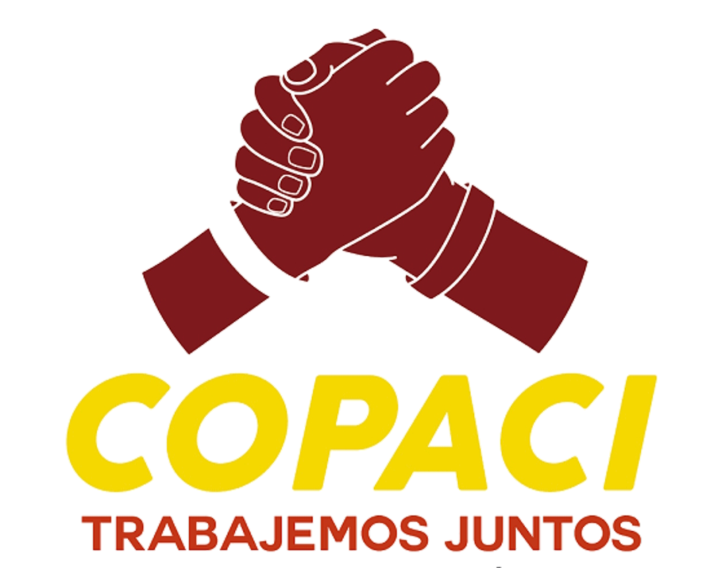

Portal de Gestión Ciudadana - Granjas Guadalupe
Consulta requisitos, costos y horarios de atención vecinal.
Inicia la solicitud digital para comprobar tu residencia local.
Reporta fallas de alumbrado, baches o servicios públicos.
Mantente al tanto de las juntas y avisos comunitarios.